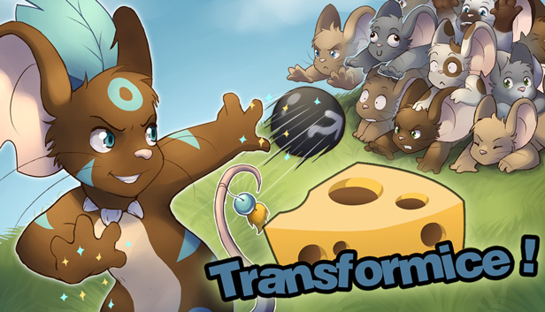
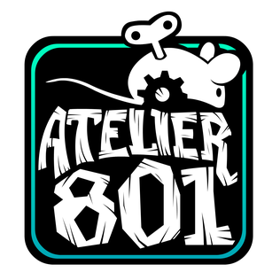
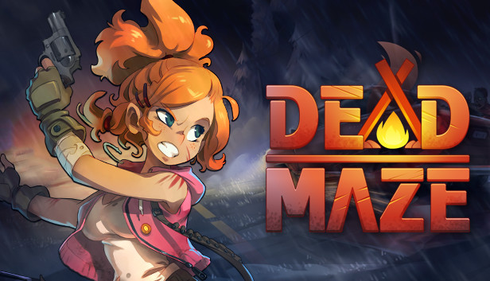
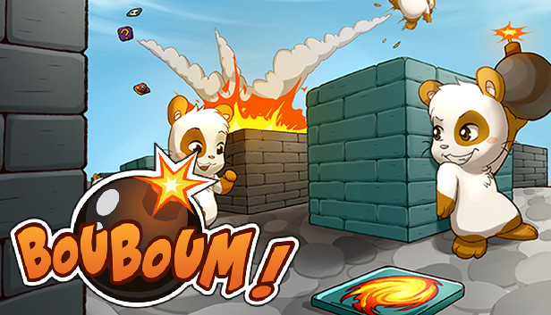
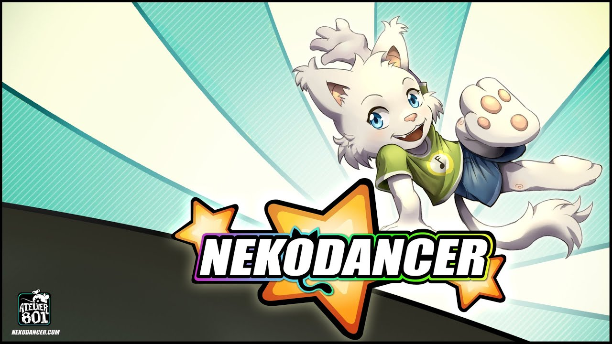
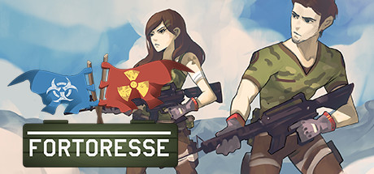

Sobre
Transformice é um divertido jogo online que cativou milhões de jogadores ao redor do mundo.
Lançado em 2010, esse jogo multiplayer desenvolvido pela empresa francesa Atelier 801 conquis-
tou uma enorme base de fãs de todas as idades.
O objetivo principal do Transformice é simples, porém desafiador: os jogadores assumem o papel
de pequenos ratos e devem cooperar para obter queijos e trazê-los de volta à toca. Parece fácil, mas
há obstáculos e armadilhas espalhados por todos os lugares, tornando o jogo emocionante e cheio de
surpresas.
O aspecto social do Transformice é uma de suas características mais marcantes. Os jogadores podem
interagir uns com os outros por meio de chats, e isso incentiva a formação de amizades e a criação de
comunidades dentro do jogo. É comum ver jogadores trabalhando juntos para superar os desafios e
compartilhando estratégias para obter mais queijos ou alcançar as tocas mais rapidamente.
Principais jogos
A Atelier 801, a empresa por trás do Transformice, desenvolveu outros jogos além desse popular título.
Embora o Transformice seja o mais conhecido, eles também criaram outros jogos igualmente divertidos.
Aqui estão alguns exemplos:

ºDead Maze: Dead Maze é um jogo de sobrevivência multiplayer em um mundo apocalíptico infestado
por zumbis. Os jogadores devem trabalhar em equipe para explorar, encontrar suprimentos, construir
abrigos e lutar contra os mortos-vivos. A cooperação é essencial para a sobrevivência nesse jogo cheio
de ação.

ºBouboum: Bouboum é um jogo de estratégia em que os jogadores controlam pequenos hamsters em um
ambiente cheio de explosivos. O objetivo é explodir os adversários usando bombas de diferentes tipos, en-
quanto evita ser pego nas próprias armadilhas. Habilidades estratégicas e reflexos rápidos são necessários
para dominar esse jogo.

ºNekodancer: Nekodancer é um jogo de ritmo divertido e cativante. Os jogadores assumem o papel de gatos
dançarinos e devem seguir os passos da música para acertar os movimentos. Com uma ampla seleção de mús-
icas e níveis de dificuldade crescentes, Nekodancer oferece uma experiência musical envolvente.

ºFortoresse: Fortoresse é um jogo de estratégia e ação em que os jogadores constroem fortalezas para proteger
seus cristais preciosos. É necessário defender a fortaleza contra os ataques inimigos, ao mesmo tempo em que
se planeja o próprio ataque para capturar os cristais dos adversários. A colaboração em equipe e a estratégia
são fundamentais para obter a vitória.

Esses são apenas alguns exemplos dos jogos desenvolvidos pela Atelier 801. Cada um deles possui uma propo-
sta única e oferece uma experiência de jogo diferente, mas todos compartilham a marca registrada da empresa:
a diversão e a interação social entre os jogadores. Independentemente do jogo escolhido, é provável que você en-
contre uma comunidade ativa e acolhedora pronta para se divertir junto com você.
Twwiter|
Facebook|
Instagram